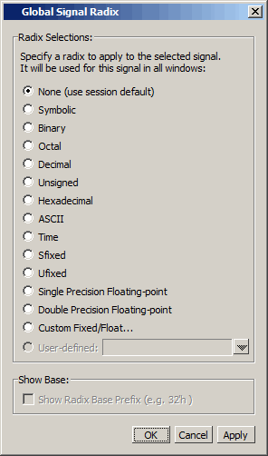

The Global Signal
Radix feature allows you to change the radix for a selected object
or objects in the Wave window and in every other window where the
object appears.
Procedure
- Select an object or objects
in the Wave window.
- Right-click to open a popup
menu.
- Select from the popup menu. This
opens the Global Signal Radix dialog, where you can set the radix
for the Wave window and other windows where the selected object(s)
appears.
Figure 1. Global Signal Radix
Dialog in Wave Window
Sfixed and Ufixed indicate
“signed fixed” and “unsigned fixed,” respectively. To display an
object as Sfixed or Ufixed the object must be an array of std_ulogic
elements between 2 and 64 bits long with a descending range. The
binary point for the value is implicitly located between the 0th
and -1st elements of the array. The index range for the type need
not include 0 or -1, for example (-4 downto -8) in which case the
value will be extended for conversion, as appropriate. If the type
does not meet these criteria the value will be displayed as decimal
or unsigned, respectively.